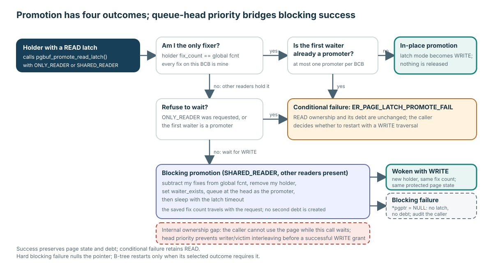

Promotion decision

Conserve fix debt and page state on success; distinguish conditional refusal from a hard failure that nulls the pointer.

| Outcome | Ownership | Observation rule |
|---|---|---|
| In-place success | Same holder/count; mode becomes WRITE. | Continuously protected. |
| Conditional failure | READ holder/count unchanged. | Still protected; caller chooses restart. |
| Blocking success | Old holder removed; saved count returns from queue head in a new WRITE holder. | Preserved: no writer or victim passes the promoter. |
| Hard blocking failure | Null pointer; old debt was not restored. | No observation or unfix may use that pointer. |
Nested count N:
fcnt.Successful promotion leaves N debts, never 2N.
| Responsibility | Pinned range |
|---|---|
| Promotion mechanism | page_buffer.c:2842–3050 |
| B-tree conditional restart | btree.c:28365–28393 |
| B-tree WRITE traversal retry | btree.c:28638–28696 |